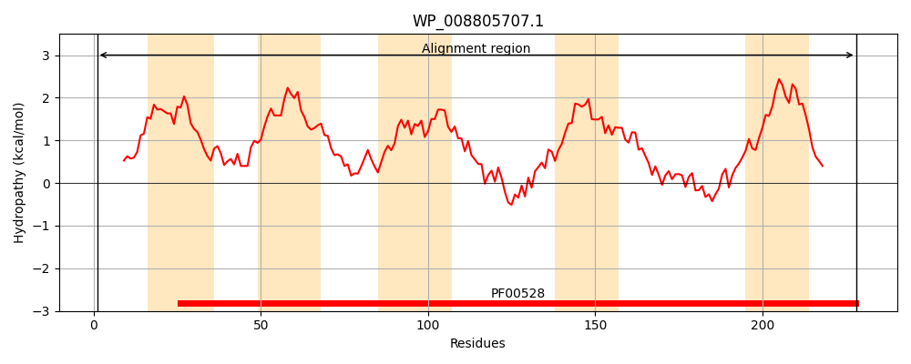
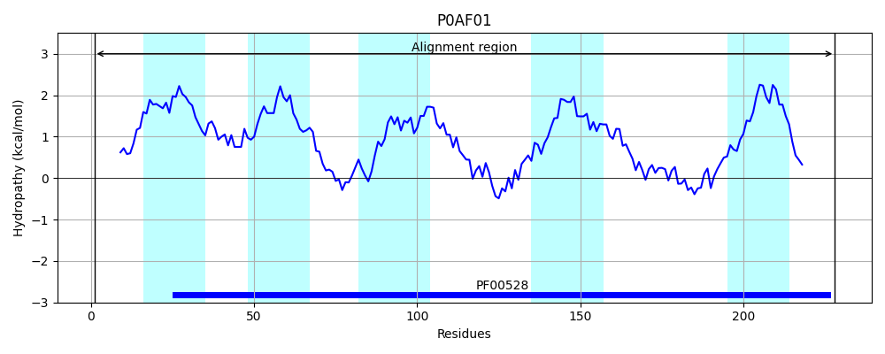
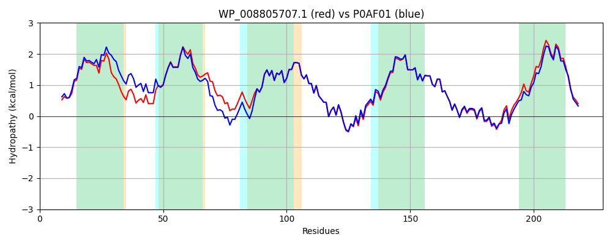

Hit Accession: P0AF01
Hit TCID: 3.A.1.8.1
Hit Description: gnl|BL_ORD_ID|8802 gnl|TC-DB|P0AF01|3.A.1.8.1 Molybdenum transport system permease protein modB - Escherichia coli.
Mach Len: 228
e:0.000000
Query TMS Count : 5
Hit TMS Count: 5
TMS-Overlap Score: 4.950000
Predicted Substrates:CHEBI:6967;molybdate
BLAST Alignment:
Score: 1039 , Bit scores: 404 bits, E-value: 1.6e-145, Alignment length: 228, Percentage identity: 89
Query: 1 MFLSEPEWQAVLLSLKVSSLAVALSLPFGIFFSWLLVRRTFPGKALLDSILHLPLVLPPVVVGYLLLVAMGRRGFIGSWLYDWFGISFAFSWRGAVLAAAVMSFPLMVRAIRLALEGVDVKLEQAARTLGASRWRVFMTITLPLTLPGIIVGTVLAFARSLGEFGATITFVSNIPGETRTLPSAMYTLIQTPGGEGAAARLCLIAIGLALVSLLISEWLARVSRQRMG 228
M L++PEWQAVLLSLKVSSLAV SLPFGIFF+WLLVR TFPGKALLDS+LHLPLVLPPVVVGYLLLV+MGRRGFIG LYDWFGI+FAFSWRGAVLAAAVMSFPLMVRAIRLALEGVDVKLEQAARTLGA RWRVF TITLPLTLPGIIVGTVLAFARSLGEFGATITFVSNIPGETRT+PSAMYTLIQTPGGE AARLC+I+I LA++SLLISEWLAR+SR+R G
Sbjct: 1 MILTDPEWQAVLLSLKVSSLAVLFSLPFGIFFAWLLVRCTFPGKALLDSVLHLPLVLPPVVVGYLLLVSMGRRGFIGERLYDWFGITFAFSWRGAVLAAAVMSFPLMVRAIRLALEGVDVKLEQAARTLGAGRWRVFFTITLPLTLPGIIVGTVLAFARSLGEFGATITFVSNIPGETRTIPSAMYTLIQTPGGESGAARLCIISIALAMISLLISEWLARISRERAG 228 | Protein Hydropathy Plots: |
|---|
|  |  |
Pairwise Alignment-Hydropathy Plot:
|
|---|
|  |